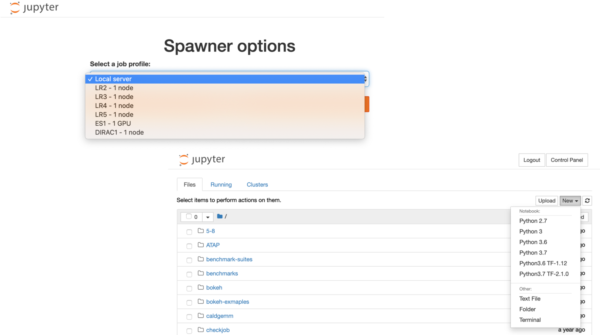

Compute Resources
Lawrencium Cluster Overview

Detailed information of Lawrencium
Accounts on Lawrencium
Three types of Project Accounts
- PI Computing Allowance (PCA) account: free 300K SUs per year (pc_xxx)
- Condo account: PIs buy in compute nodes to the general condo pool (lr_xxx)
- Recharge account: with minimal recharge rate ~ $0.01/SU (ac_xxx)
User accounts
- User account request
- User agreement consent
https://sites.google.com/a/lbl.gov/hpc/getting-an-account
Software Module Farm
Module commands
- module purge: clear user’s work environment
- module avail: check available software packages
- module load xxx: load a package
- module list: check currently loaded software
- Users may install their own software
SLURM: Resource Manager & Job Scheduler
Job Submission
- Get help with the complete command options
sbatch --help - sbatch: submit a job to the batch queue system
sbatch myjob.sh
- srun: request an interactive node(s) and login automatically
srun -A ac_xxx -p lr5 -q lr_normal -t 1:0:0 --pty bash
- salloc : request an interactive node(s)
salloc –A pc_xxx –p lr6 –q lr_debug –t 0:30:0
Job Monitoring
- sinfo: check status of partitions and nodes (idle, allocated, drain, down)
sinfo –r –p lr6 - squeue: check jobs in the batch queuing system (R or PD)
squeue –u $USER
- sacct: check job information or history
sacct -X -o 'jobid,user,partition,nodelist,stat'
- scancel : cancel a job
scancel jobID
- Check slurm association, such as qos, account, partition
sacctmgr show association user=UserName -p
perceus-00|ac_test|UserName|lr6|1||||||||||||lr_debug,lr_lowprio,lr_normal|||
perceus-00|ac_test|UserName|lr5|1||||||||||||lr_debug,lr_lowprio,lr_normal|||
perceus-00|pc_test|UserName|lr4|1||||||||||||lr_debug,lr_lowprio,lr_normal|||
perceus-00|lr_test|UserName|lr3|1||||||||||||lr_debug,lr_lowprio,lr_normal,te
perceus-00|scs|UserName|es1|1||||||||||||es_debug,es_lowprio,es_normal|||
Data Transfer Node & Visualization Node
- Designate data transfer node lrc-xfer.lbl.gov
- scp -r /your/source/file $USER@lrc-xder.lbl.gov:/cluster/path
- rsync -avzh /your/source/file $USER @lrc-xfer.lbl.gov:/cluster/path
- Globus Online provide secured unified interface for data transfer
- endpoint lbn#lrc, Globus Connect, AWS S3 connector
- Visualization and remote desktop node viz.lbl.gov
- Detailed information click here
JupyterHub

Virtual Machine Services

More information of VM click here